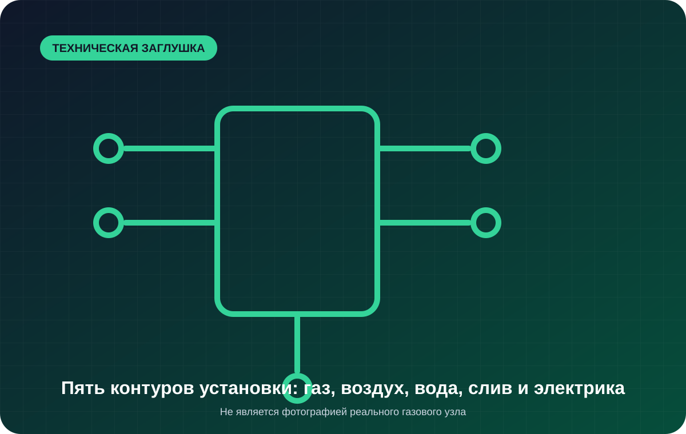

Шильдик и документация
Точная модель, тип и категория газа, электрические параметры и актуальное руководство.
Не запускайте аппарат повторно и не переключайте электрооборудование рядом. Перекройте подачу при безопасной возможности, проветрите помещение и действуйте по аварийному регламенту объекта. Обычная заявка на ремонт не заменяет аварийное обращение.
До подключения сверяются шильдик, тип газа, документация модели, площадка, сервисные зазоры, вода, слив, электропитание, вентиляция и распределение ответственности.

Диагностическая логика
Страница не заменяет проект и руководство производителя. Она помогает заранее собрать исходные данные и не обнаружить несовместимость в день запуска.
Точная модель, тип и категория газа, электрические параметры и актуальное руководство.
Несущая способность, выравнивание, открывание двери и доступ к сервисным зонам.
Требования к качеству воды, сливу, защите питания и подключению автоматики.
Подготовленная сеть объекта, запорная арматура, зонт, приток и предусмотренный отвод.
До выезда
Другой симптом
Последовательность останавливается до устойчивого пламени.
Запуск проходит, но подтверждение пламени не удерживается.
На экране появляется код или сообщение после попытки запуска.
Горелка запускается, но камера медленно или нестабильно греется.
Проверка связи аппарата с вытяжкой, притоком и условиями установки.
FAQ
Нет. Состав подключений и точные параметры определяются конкретной моделью и проектом объекта.
Как правило, автоматика, вентиляторы, управление, парообразование и мойка требуют соответствующих подключений; точный состав указан в документации модели.
Габариты проходов, площадку, сервисный доступ, инженерные точки и совместимость газового исполнения.
Заявка без лишних полей
Для первичного маршрута достаточно контакта, модели и наблюдаемого симптома. Фото шильдика и экрана удобнее приложить в WhatsApp.
Отправить фото в WhatsApp